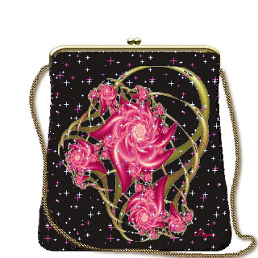
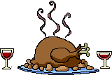
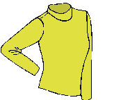
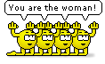
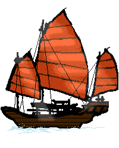
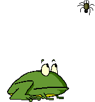

What is Crowdfunding?
Crowdfunding is a way of raising capital for projects or for starting up a business by getting numerous smaller amounts of money from a large groups of people, by typically using the Internet and social media.Suppose you need to organise a trip for your school to stay at Mossel Bay.
You would need a small fortune to set them all up in a nearby hotel for two weeks.
 Unless you have that money, you would have to fundraise a large amount to help you with this project.
Unless you have that money, you would have to fundraise a large amount to help you with this project.
By crowdfunding, you could receive that amount you need much faster than usual. All you do is set up a crowdfunding campaign online, using the Internet and posting your goal and cause on social media. Tell people all about your school and why it's important to take them on this trip. If people are interested in your school they may want to contribute towards your project. By having many people doing so, each giving a small sum of money, you can reach your target much quicker, as all these numerous small sums will add up to that large target you are hoping to fundraise.
To start your own crowdfunding, here are good tips for you to follow:
- Think of a total sum of money you would need in order to bring about the desired outcome.
- Create a short video describing what your company or business is about and the purpose of your campaign. For a better idea on how to make a video for your crowdfunding campaign click here
- Find a platform, such as Kickstarter to manage all the financial contributions, or do so yourself.
- Decide whether to give rewards or to make it a simple charity project.
- Let people be aware of the campaign that you will launch off, in order to achieve better success. This can be done in a few ways:
- By calling people
- Posting information about your project online or on social networks
- Sending out leaflets or pamphlets informing others of the campaign
- Putting an advertisement in the magazine or local newspaper
- Finally launch your crowdfunding campaign online.
If you are wondering which social network would be best to advertise on,
we have conducted a questionnaire to determine just that!
Click on the button below to view the graph

If you have decided to give out rewards to contributors, they can be simple or expensive. Just make sure to remember everyone!
Here are some ideas:
| Simple | Complex |
|---|---|
|  |  |
|  |  |
 |
 |
 | |
 |
Don't give up your idea though! There is a strong likelihood that your company will be able to achieve your goal and even make extra. If the campaign proves successful, it can help you grow to even greater heights than before and attract much attention, making your company more popular than ever. So be aware, it's a risk you are taking. But know that every giant leap begins with one small step.
